Zdjęcie nie powinno zatrzymywać przejścia ani światła innych osób.
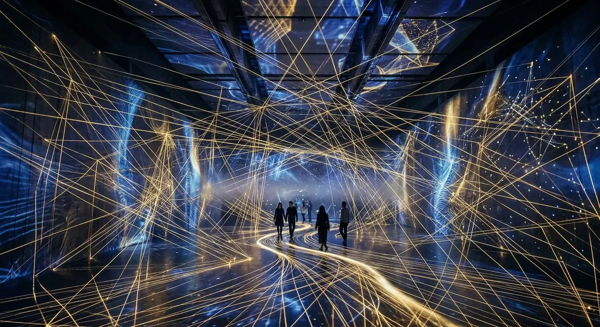
PRZESTRZEŃ
Sześć sal. Jedna zmieniająca się przestrzeń.
Światło, dźwięk, odbicie i ruch innych osób nie otaczają dzieła — stają się jego częścią.
Wejdź do pierwszej saliFikcyjna wystawa · doświadczenie przed informacją
Nie oglądasz przestrzeni. Wchodzisz w jej warunki.
Każda sala zmienia skalę przez światło, dźwięk, odbicie i ruch publiczności. Strona nie zastępuje wizyty — pozwala wybrać tempo i przygotować ciało.
6 obrazów koncepcyjnych · brak prawdziwego programu
ROOM 01 / 06
Echo ciszy
Ania Kowalska · instalacja świetlna
12 minjasne / refleksycicho
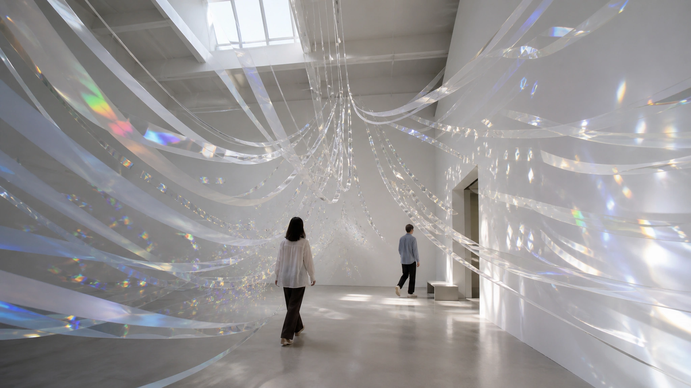
Tysiące przezroczystych elementów rozszczepiają dzienne światło. Obecność widza jest widoczna jako poruszające się widmo na ścianach.
Równa podłoga · ławka przy wyjściu · bez głośnego dźwiękuSześć progów. Żadnej obowiązkowej kolejności.
Numery pomagają opisać warunki, nie narzucają ścieżki. Możesz ominąć salę, wrócić do ciszy albo zakończyć wcześniej.
- 01refleks12 MIN
- 02ruch18 MIN
- 03kolor18 MIN
- 04skala14 MIN
- 05odbicie20 MIN
- 06dźwięk16 MIN
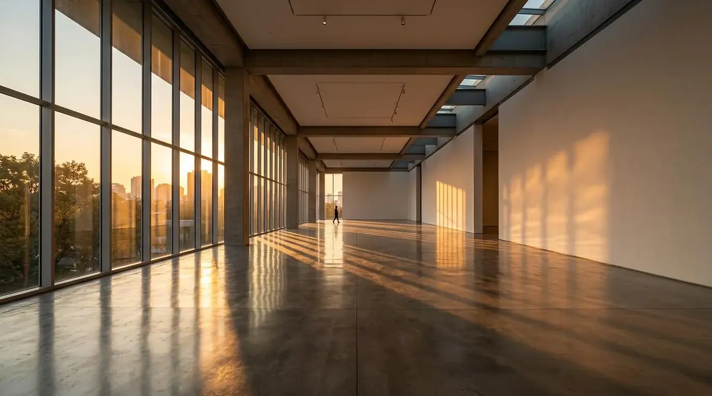
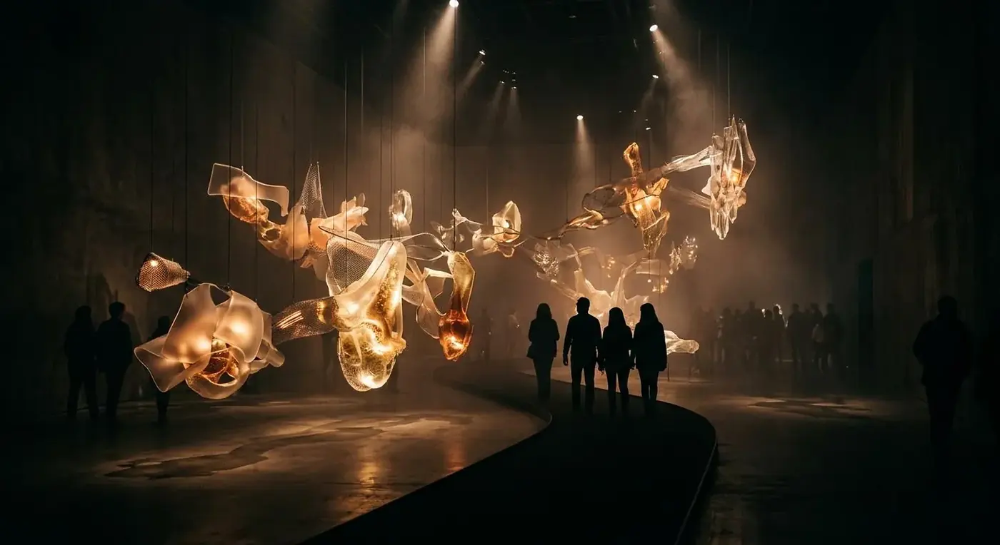
Twoje ciało nie jest kursorem.
Wchodzisz, zatrzymujesz się, zasłaniasz światło, uruchamiasz warstwę dźwięku i zmieniasz obraz dla następnej osoby. Dlatego opis sali mówi również o tłumie, odpoczynku i drodze wyjścia.
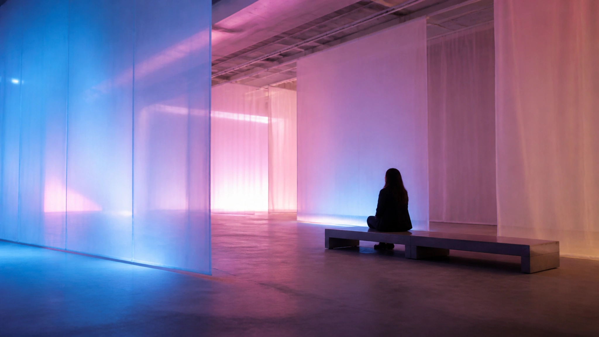
ROOM 03 / LIGHT
Kolor porusza się wolniej niż publiczność.
Chromatyczny świt przechodzi od chłodnego błękitu do różu bez gwałtownych błysków. Ławka pozwala zostać przez pełny cykl.
Dźwięk nie ma jednego frontu.
W ostatniej sali kierunek zmienia się wraz z położeniem grupy. Można wyjść w dowolnej chwili, a poprzedzający korytarz pozostaje strefą ciszy.
ciszadźwięk przestrzenny
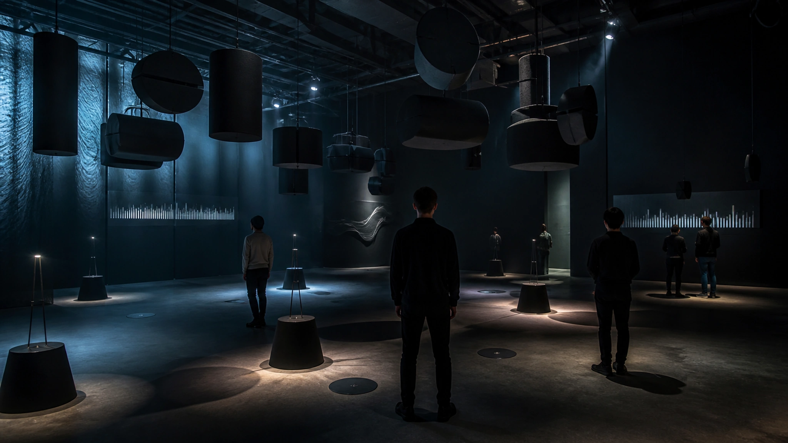
Ile przestrzeni chcesz dziś pomieścić?
Wybierz czas i intensywność. Otrzymasz lokalną trasę po fikcyjnym programie — bez rezerwacji i bez wysyłania danych.
Twoja trasa koncepcyjna90 MIN
- 01 Echo ciszy 12 min
- 03 Chromatyczny świt 18 min
- 04 Fragmenty pamięci 14 min
- 05 Nieskończony pokój 20 min
Równoważy jasne i ciemne sale. Zaplanowano dwie spokojne strefy i jedną ławkę w połowie trasy.
Przerwa też należy do wystawy.
Między wysokim kontrastem a dźwiękiem trasa prowadzi przez spokojniejsze progi. Czas planu obejmuje siedzenie, zmianę kierunku i możliwość pominięcia sali.
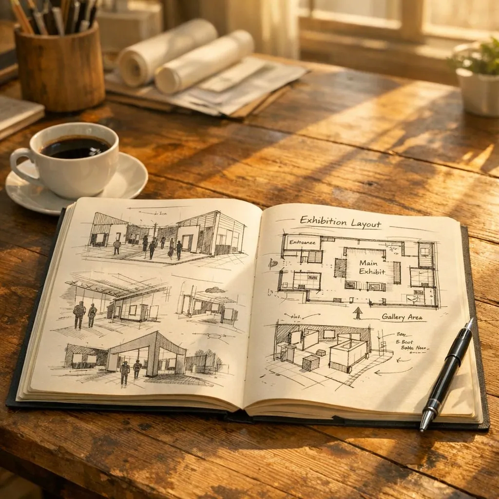
AFTER 01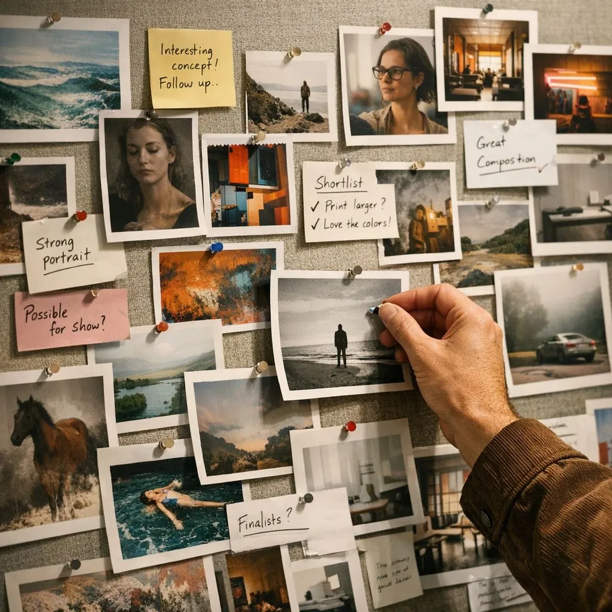
AFTER 03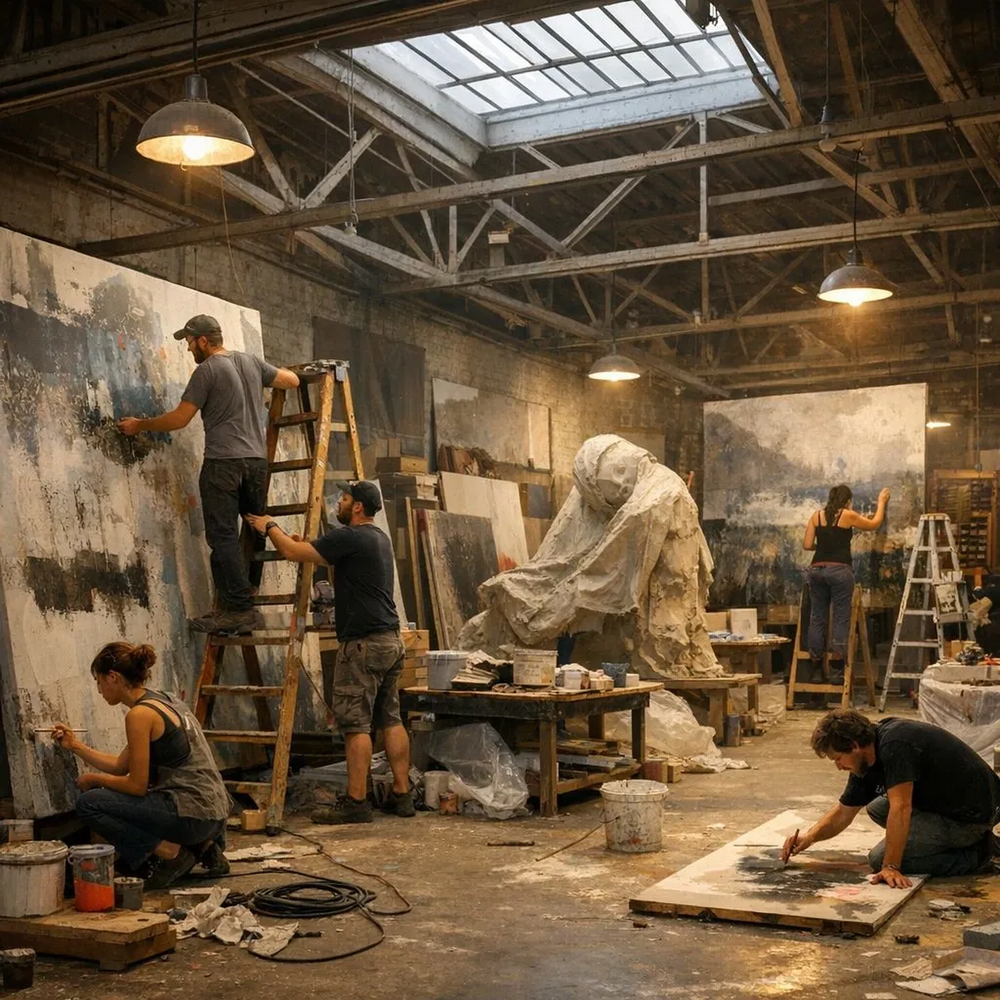
AFTER 05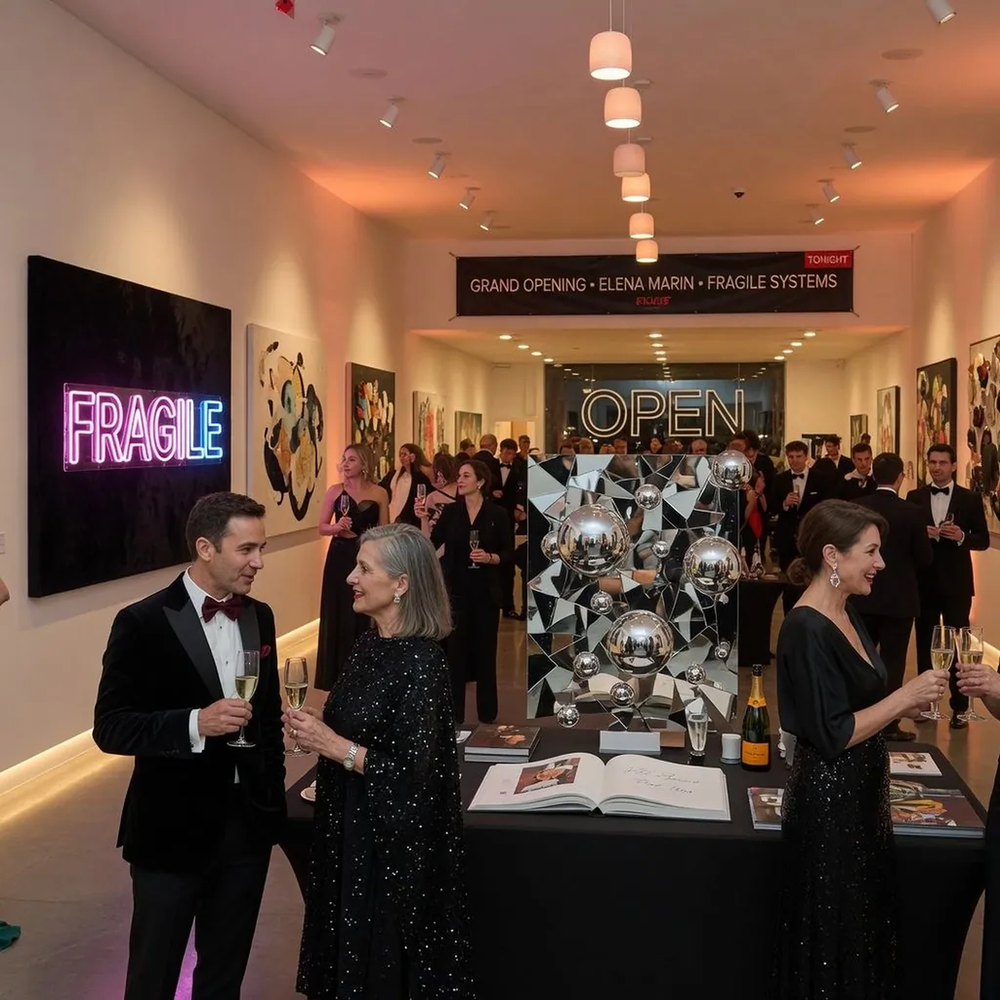
EXITMapa bodźców zamiast etykiety „immersyjne”.
Warunki są opisane osobno, bo jasność, ruch, dźwięk i tłum nie znaczą dla wszystkich tego samego.
ROOMLIGHTSOUNDCROWDSEAT
01●●○●○○●●○YES
02●●●●●●●●●NO
03●●○●○○●●○YES
04●●○○○○●○○NO
05●●●●○○●●○YES
06●○○●●●●●○NO
Zanim wejdziesz.
RuchTrasa bez schodów w koncepcie; rzeczywisty obiekt wymaga audytu.
DźwiękSale 02 i 06: dźwięk przestrzenny. Strefy ciszy między salami.
ŚwiatłoBłyski i wysoki kontrast w salach 02 i 05; opisy przy każdej sali.
OdpoczynekSiedziska po salach 01, 03 i 05. Czas trasy uwzględnia przerwy.
StatusWszystkie informacje są elementem fikcyjnego portfolio concept.
Co dzieje się przed pierwszą salą.
- ENTRYSprawdzasz status i warunki
To koncept: brak prawdziwego adresu, biletu i kolejki.
- ORIENTWybierasz tempo
45, 90 lub 150 minut z możliwością wyjścia wcześniej.
- PREPARECzytasz mapę bodźców
Światło, dźwięk, tłum, siedzenie i spokojne progi.
- ENTERZaczynasz od dowolnej sali
Numer pomaga wrócić do opisu, nie zamyka trasy.
Dziel przestrzeń, nie zabieraj jej.
Element reagujący na ruch nie zawsze jest elementem dotykowym.
Możesz przerwać doświadczenie bez kończenia całej sekwencji.
Przed wizytą — gdyby wystawa była realna.
Te odpowiedzi pokazują zakres informacji, który musi zostać zweryfikowany przed publikacją.
Czy trasa jest bez schodów?
Tak zakłada koncept, ale realna deklaracja wymaga audytu budynku, wejść, wind i dróg ewakuacji.
Czy można pominąć intensywną salę?
Tak. Każda sala ma osobne wejście i wyjście w logice konceptu.
Czy plan jest rezerwacją?
Nie. Powstaje wyłącznie lokalnie w tej demonstracji i nie wysyła danych.
Czy obrazy przedstawiają prawdziwe prace?
Nie. To obrazy koncepcyjne należące do a fictional portfolio project.
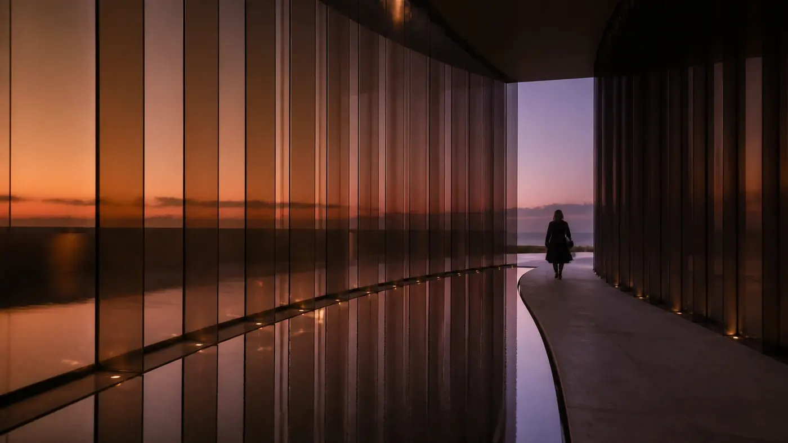
Brak sprzedaży · brak transmisji danych
Zbuduj trasę. Zostaw możliwość zmiany zdania.
Wróć do planera, wybierz czas i intensywność, a demonstracja zapisze wynik tylko w bieżącym widoku.
Wróć do planera